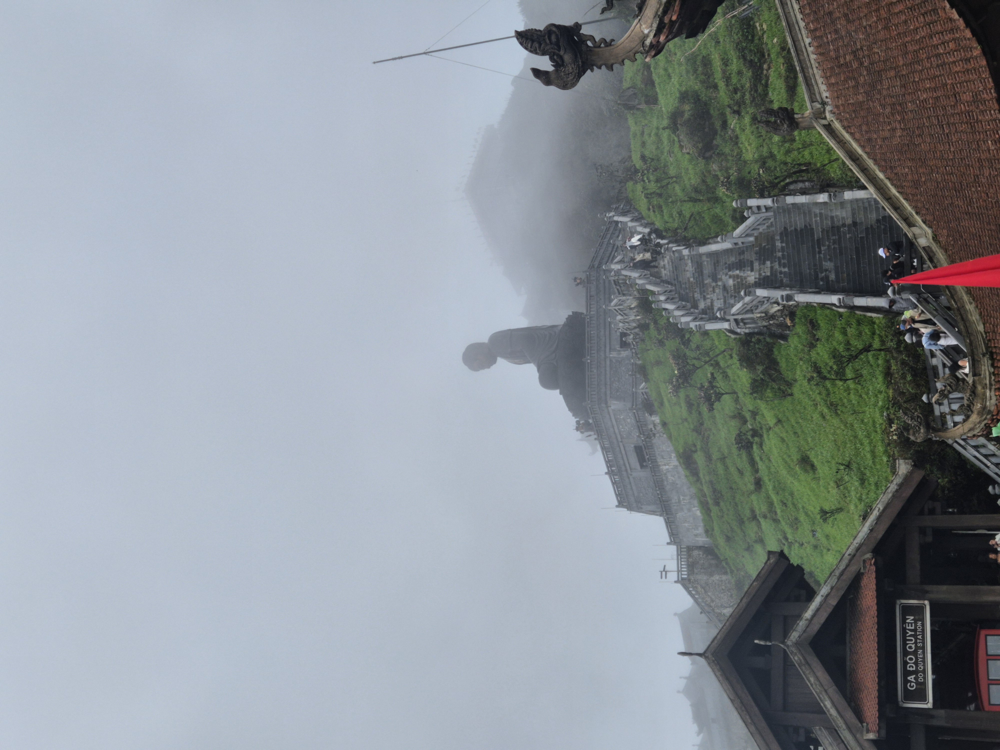

사파는 하노이에서 야간기차나 슬리핑버스로 갑니다. 밤에 이동해 아침에 도착하면 하루를 통째로 벌 수 있어요. 3박 4일이면 깟깟마을·무엉호아 계곡·판시판까지 여유롭게 돌 수 있습니다.
🚂 사파 여행 핵심 정보
하노이에서 사파 가는 법 — 기차 vs 슬리핑버스
사파는 공항이 없어 하노이에서 육로로 갑니다. 방법은 크게 두 가지, 둘 다 밤에 자면서 이동하는 게 핵심이에요.
| 구분 | 야간 기차 | 슬리핑 버스 |
|---|---|---|
| 소요 시간 | 약 8시간 + 셔틀 70분 | 약 6시간 |
| 도착지 | 라오까이역 (사파서 33km) | 사파 시내 직행 |
| 승차감 | 흔들림·소음 있음 | 도로 상태 좋음 |
| 분위기 | 낭만·추억 | 실용적 |
| 추천 | 기차 여행 좋아하면 | 시간·편의 우선이면 |
하노이역에서 밤 21:35 / 22:00 / 22:40(SP1·SP3·SP7)에 출발해 새벽 05:15~06:30에 라오까이역 도착합니다. 침대칸(4인실·2인실)이 있고 콘센트·에어컨이 갖춰져 있어요. 단, 라오까이역은 사파가 아닙니다 — 여기서 셔틀버스(미니밴)로 약 70분 더 올라가야 사파예요. 보통 기차표에 셔틀이 포함되거나 현장에서 연결됩니다.
낭만 · 침대칸 · 셔틀 별도고속도로가 뚫려 약 6시간이면 사파 시내까지 바로 갑니다. 완전히 눕는 침대형과, 커튼으로 가려지는 캐빈(캡슐)형이 있어요. 하노이 구시가지에서 픽업해 사파 시내에 내려줘서 편합니다.
빠름 · 직행 · 가성비언제 가야 좋을까 — 사파 날씨
사파는 해발 1,600m라 하노이보다 10℃ 가까이 서늘합니다. 계단식 논이 황금빛으로 물드는 9~10월이 가장 유명해요.
| 시기 | 날씨·풍경 | 추천도 |
|---|---|---|
| 9월~11월 | 황금빛 계단식 논, 선선·맑음 | ★★★ |
| 3월~5월 | 모내기·초록빛, 온화 | ★★★ |
| 6월~8월 | 우기, 비·안개 많음 | ★ |
| 12월~2월 | 매우 추움(영하 근접·눈) | ★ |
사파 3박 4일 일정표
밤 이동 2번(갈 때·올 때)을 활용하면, 사파에서 꽉 찬 2일 반을 쓸 수 있습니다.
저녁까지 하노이에서 일정을 소화하고, 밤에 야간기차(21:35~22:40) 또는 슬리핑버스로 출발합니다. 자면서 이동하니 숙박비도 하루 아끼는 셈이에요. 출발 전 구시가지에서 든든히 저녁을 먹어두세요.
밤 이동 · 숙박비 절약새벽~아침에 사파 도착. 숙소에 짐을 맡기고 깟깟(Cát Cát) 마을로 갑니다. 사파 시내에서 걸어서 갈 수 있는 흐몽족 마을로, 계단식 논과 물레방아·폭포가 어우러진 사파의 대표 코스예요. 오후엔 사파 시내와 사파 호수·성당을 산책하고, 저녁엔 사파 야시장에서 꼬치구이를 즐기세요.
깟깟마을 · 시내 산책오전엔 판시판(Fansipan). 인도차이나 최고봉(3,143m)을 케이블카로 오릅니다. 정상 부근은 여름에도 서늘하니 겉옷 필수. 오후엔 무엉호아 계곡의 계단식 논을 따라 라오짜이·따반 마을 트레킹을 하거나, 체력이 부담되면 차량 투어로 전망 포인트만 돌아도 좋습니다.
판시판 · 계곡 트레킹오전엔 시내 함롱산 전망대에 올라 사파 전경을 눈에 담고, 기념품(소수민족 자수·차)을 삽니다. 오후~밤에 기차·버스로 하노이 복귀. 밤에 이동하면 다음 날 아침 하노이에서 바로 일정을 이어갈 수 있어요.
전망 · 밤 이동 복귀사파 대표 명소
일정에 넣은 곳들을 조금 더 자세히.
사파 시내에서 약 2~3km, 걸어서도 갈 수 있는 흐몽족 전통 마을. 계단식 논, 폭포, 전통 가옥과 포토존이 잘 갖춰져 있어 사파 첫 코스로 가장 인기입니다. 내려갈 땐 걷고 올라올 땐 오토바이 택시를 이용하는 분도 많아요.

해발 3,143m, '인도차이나의 지붕'이라 불리는 최고봉. 예전엔 1박 2일 등반이 필요했지만, 지금은 케이블카로 20분이면 정상 부근까지 오릅니다. 정상까지는 계단 또는 푸니쿨라(등산열차)로 이동해요. 날이 맑으면 구름 위 절경이, 흐리면 새하얀 운해가 펼쳐집니다.
케이블카 · 겉옷 필수
사파 하면 떠오르는 계단식 논이 끝없이 펼쳐지는 계곡. 라오짜이·따반 마을까지 트레킹하며 소수민족의 삶을 가까이서 볼 수 있습니다. 9~10월엔 논이 황금빛으로 물들어 절정이에요.
트레킹 · 9~10월 절정시내 바로 옆 전망 공원. 정원과 전망대에서 사파 전경을 한눈에 볼 수 있어, 마지막 날 가볍게 오르기 좋습니다. 시내엔 돌로 지은 사파 성당과 야시장이 있어요.
전망 · 시내 도보산속에서도 지도·번역은 필요합니다
기차·버스 예약 확인, 트레킹 중 지도, 소수민족 마을에서의 번역까지 데이터가 필요합니다. eSIM을 한국에서 미리 사두면 하노이 도착 즉시 연결되고, 사파에서도 그대로 쓸 수 있어요.
베트남 eSIM 보러가기 ※ 이 버튼에 제휴 링크를 연결하세요. 일부 링크는 수수료를 받을 수 있습니다.사파 숙소, 전망이 전부입니다
사파는 계곡 전망 유무로 만족도가 갈립니다. 9~11월 성수기엔 전망 좋은 방이 금방 마감되니 미리 비교해 보세요.
사파·하노이 호텔 보기 ※ 제휴 링크로, 예약 시 소정의 수수료를 받을 수 있습니다(독자 추가 비용 없음).여유가 있다면 — 조금 더 깊이
관광객이 덜 가는, 사파의 또 다른 얼굴입니다.
사파에서 꼭 먹어볼 것
산속 마을의 별미들입니다.
사파는 서늘해서 훠궈(전골)가 별미입니다. 특히 이 지역 냉수에서 기른 연어(cá hồi) 훠궈가 유명해요. 저녁 야시장의 숯불 꼬치구이는 추운 밤에 딱이고, 땅콩두부(đậu phụ)와 흑돼지 요리도 맛있습니다.
정리하면, 사파는 9~11월에, 밤 이동을 낀 3박 4일이 가장 알찹니다. 기차의 낭만이 좋으면 야간기차, 시간과 편의가 우선이면 슬리핑버스를 고르세요. 베트남에서 만나는 완전히 다른 풍경, 꼭 한 번 가보시길 추천합니다!
- 다낭 완벽 가이드
- 나트랑 완벽 가이드
- 푸꾸옥 완벽 가이드
- 하노이 완벽 가이드
- 사파 3박 4일 코스 (지금 보는 글)
- 호치민 완벽 가이드
※ 날씨·시즌 정보는 해에 따라 다를 수 있으니 출발 전 예보를 확인하세요. 본문 일부 링크는 제휴 링크로, 이용 시 소정의 수수료를 받을 수 있습니다(독자에게 추가 비용은 없습니다).